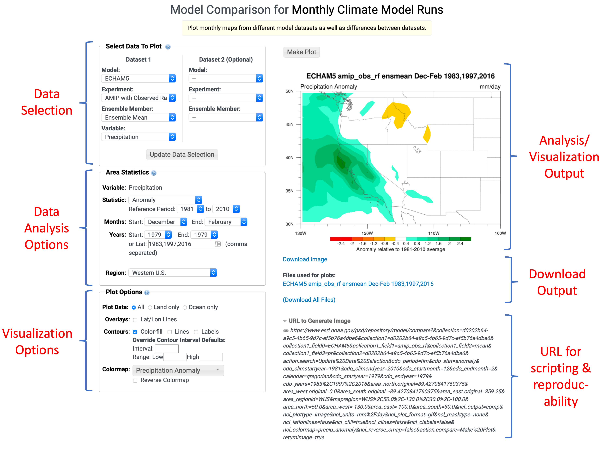
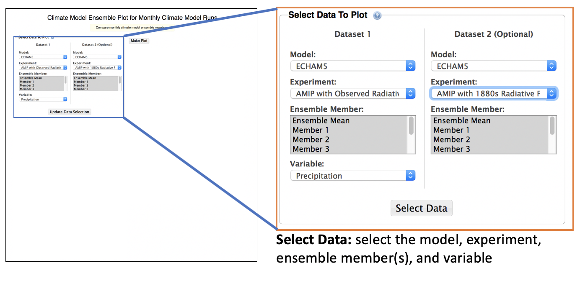
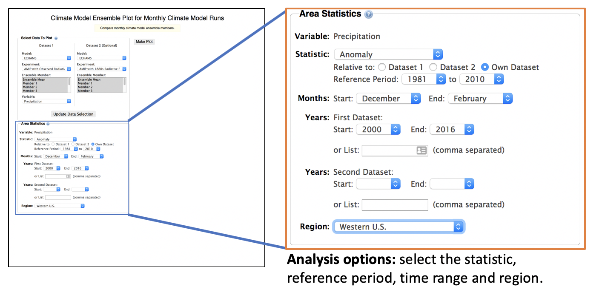
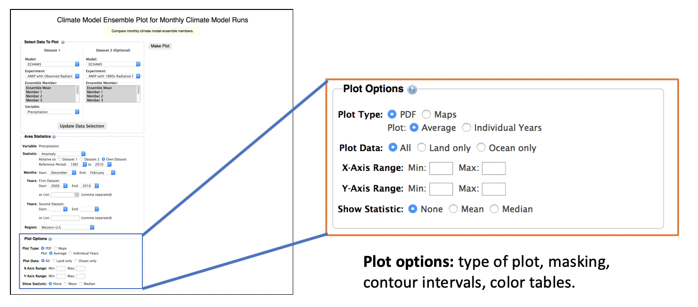
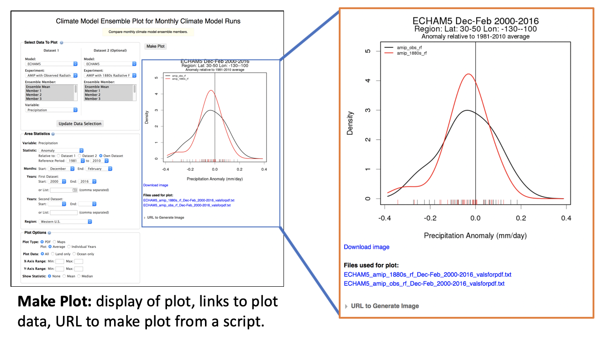

The FACTS user interface was designed to be modular so that different components could be used in different
contexts to provide the user with a consistent interface. Figure 1 shows the major features of the analysis
and visualization web pages.

Figure 1. Overview of the FACTS User Interface
This page walks you through the interface to produce a Probability
Density Function (PDF) from two different datasets, but the same
concepts are applicable to other analysis functions of the website.
Data Selection
For each of the analysis and visualizations pages,
a user first selects the datasets, model experiments, ensemble member and variable.
- From the Collection, select the Model, Experiment, Ensemble Member and Variable you wish to plot
- Optionally, select a second data set you wish to compare with the first.
- Click the Select Data button to bring up the options for analyzing and plotting the data you've selected.
If you make any changes in the Field(s) section, click the Update Data Selection button to refresh the options below.

Figure 2. Selecting data
Data Analysis Options
After the data has been selected, options are presented for data
analysis and visualization.
- If you are plotting pressure level data, select the Level you wish to use
- You can plot either the Average, the Anomaly, the Standardized
Anomaly or (for precipitation) the Percent of Normal over the region.
Anomalies are computed relative to the 1981-2010 average for the
ensemble mean by default. You can select a different time period
if desired for single model comparisons.
- For times, depending on the configuration you can either select:
- Choose a starting and ending month over which to average the data.
- Choose a starting and ending year over which to average the data. Alternatively, type in a list of years that are separated by commas (e.g. 1983, 1986, 1997)
- If you are doing a comparison, select the years for the second dataset.
OR
Select from a list of pre-defined times.
- Select the Region that the data will be averaged over. You can
select from a predefined list of regions, or select Custom. If you
choose custom, you can draw a region on the map (use Shift+drag to
draw the region), or enter the North, South, West and East coordinates
of the region.

Figure 3. Data Analysis and Subset Options
Visualization Options
The Plot Options box provides some controls for customizing the visualization
that is produced.
- If you are doing a comparison between datasets, you can either plot the result as a
difference between the two fields, or as 2 separate plots.
- For some fields, you can select the output units for the plot.
- You can select a mask for the data to block out either ocean or land areas.
- Model Comparison
- You can plot the output as color-filled contours and optionally overlay contour lines and labels.
- You can override the default contour intervals for the plots by specifying a contour interval,
minimum and maximum values.
- Ensemble Comparison
- If you are doing an ensemble comparison, you can select to plot maps or a probability density function (PDF)
- For the PDF, you can set the X and Y axis ranges. For the maps, you can set the contour options as above.

Figure 3. Options for customizing the plot
Making the Plot
After you have made your selections, click the
Make Plot button to generate the image.
- An image will be displayed to the right of the data selection region. You can click on the image to get a full sized version of it. There is link below the image which allows you to download the image to your computer.
- There are links for downloading the files that were used to create the images and to download all files (images, netCDF, etc)
- There is also a link to the URL that can be used to generate the plot. This is useful if you wish to use a script
with replaceable parameters to generate images from other models or experiments.

Figure 4. Display output